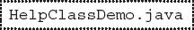
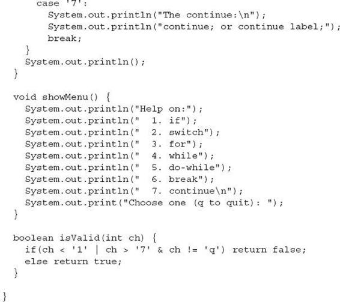

Chapter 4
Introducing Classes, Objects, and Methods
Key Skills & Concepts
 Know the fundamentals of the class
Know the fundamentals of the class Understand how objects are created
Understand how reference variables are assigned
Create methods, return values, and use parameters
Use the return keyword
Return a value from a method
Add parameters to a method
Utilize constructors
Create parameterized constructors
Understand new
Understand garbage collection and finalizers
Use the this keyword
Before you can go much further in your study of Java, you need to learn about the class. The class is the essence of Java. It is the foundation upon which the entire Java language is built because the class defines the nature of an object. As such, the class forms the basis for object-oriented programming in Java. Within a class are defined data and code that acts upon that data. The code is contained in methods. Because classes, objects, and methods are fundamental to Java, they are introduced in this chapter. Having a basic understanding of these features will allow you to write more sophisticated programs and better understand certain key Java elements described in the following chapter.
Class Fundamentals
Since all Java program activity occurs within a class, we have been using classes since the start of this book. Of course, only extremely simple classes have been used, and we have not taken advantage of the majority of their features. As you will see, classes are substantially more powerful than the limited ones presented so far.
Let’s begin by reviewing the basics. A class is a template that defines the form of an object. It specifies both the data and the code that will operate on that data. Java uses a class specification to construct objects. Objects are instances of a class. Thus, a class is essentially a set of plans that specify how to build an object. It is important to be clear on one issue: a class is a logical abstraction. It is not until an object of that class has been created that a physical representation of that class exists in memory.
One other point: Recall that the methods and variables that constitute a class are called members of the class. The data members are also referred to as instance variables.
The General Form of a Class
When you define a class, you declare its exact form and nature. You do this by specifying the instance variables that it contains and the methods that operate on them. Although very simple classes might contain only methods or only instance variables, most real-world classes contain both.
A class is created by using the keyword class. A simplified general form of a class definition is shown here:
Although there is no syntactic rule that enforces it, a well-designed class should define one and only one logical entity. For example, a class that stores names and telephone numbers will not normally also store information about the stock market, average rainfall, sunspot cycles, or other unrelated information. The point here is that well-designed class groups logically connected information. Putting unrelated information into the same class will quickly destructure your code!
Up to this point, the classes that we have been using have had only one method: main( ). Soon you will see how to create others. However, notice that the general form of a class does not specify a main( ) method. A main( ) method is required only if that class is the starting point for your program. Also, some types of Java applications, such as applets, don’t require a main( ).
Defining a Class
To illustrate classes, we will develop a class that encapsulates information about vehicles, such as cars, vans, and trucks. This class is called Vehicle, and it will store three items of information about a vehicle: the number of passengers that it can carry, its fuel capacity, and its average fuel consumption (in miles per gallon).
The first version of Vehicle is shown next. It defines three instance variables: passengers, fuelcap, and mpg. Notice that Vehicle does not contain any methods. Thus, it is currently a data-only class. (Subsequent sections will add methods to it.)
A class definition creates a new data type. In this case, the new data type is called Vehicle. You will use this name to declare objects of type Vehicle. Remember that a class declaration is only a type description; it does not create an actual object. Thus, the preceding code does not cause any objects of type Vehicle to come into existence.
To actually create a Vehicle object, you will use a statement like the following:
After this statement executes, minivan will be an instance of Vehicle. Thus, it will have “physical” reality. For the moment, don’t worry about the details of this statement.
Each time you create an instance of a class, you are creating an object that contains its own copy of each instance variable defined by the class. Thus, every Vehicle object will contain its own copies of the instance variables passengers, fuelcap, and mpg. To access these variables, you will use the dot (.) operator. The dot operator links the name of an object with the name of a member. The general form of the dot operator is shown here:
object.member
Thus, the object is specified on the left, and the member is put on the right. For example, to assign the fuelcap variable of minivan the value 16, use the following statement:
In general, you can use the dot operator to access both instance variables and methods.
Here is a complete program that uses the Vehicle class:
You should call the file that contains this program VehicleDemo.java because the main( ) method is in the class called VehicleDemo, not the class called Vehicle. When you compile this program, you will find that two .class files have been created, one for Vehicle and one for VehicleDemo. The Java compiler automatically puts each class into its own .class file. It is not necessary for both the Vehicle and the VehicleDemo class to be in the same source file. You could put each class in its own file, called Vehicle.java and VehicleDemo.java, respectively.
To run this program, you must execute VehicleDemo.class. The following output is displayed:
Before moving on, let’s review a fundamental principle: each object has its own copies of the instance variables defined by its class. Thus, the contents of the variables in one object can differ from the contents of the variables in another. There is no connection between the two objects except for the fact that they are both objects of the same type. For example, if you have two Vehicle objects, each has its own copy of passengers, fuelcap, and mpg, and the contents of these can differ between the two objects. The following program demonstrates this fact. (Notice that the class with main( ) is now called TwoVehicles.)
The output produced by this program is shown here:
As you can see, minivan’s data is completely separate from the data contained in sportscar. The following illustration depicts this situation.
How Objects Are Created
In the preceding programs, the following line was used to declare an object of type Vehicle:
This declaration performs two functions. First, it declares a variable called minivan of the class type Vehicle. This variable does not define an object. Instead, it is simply a variable that can refer to an object. Second, the declaration creates a physical copy of the object and assigns to minivan a reference to that object. This is done by using the new operator.
The new operator dynamically allocates (that is, allocates at run time) memory for an object and returns a reference to it. This reference is, more or less, the address in memory of the object allocated by new. This reference is then stored in a variable. Thus, in Java, all class objects must be dynamically allocated.
The two steps combined in the preceding statement can be rewritten like this to show each step individually:
The first line declares minivan as a reference to an object of type Vehicle. Thus, minivan is a variable that can refer to an object, but it is not an object itself. At this point, minivan does not refer to an object. The next line creates a new Vehicle object and assigns a reference to it to minivan. Now, minivan is linked with an object.
Reference Variables and Assignment
In an assignment operation, object reference variables act differently than do variables of a primitive type, such as int. When you assign one primitive-type variable to another, the situation is straightforward. The variable on the left receives a copy of the value of the variable on the right. When you assign one object reference variable to another, the situation is a bit more complicated because you are changing the object that the reference variable refers to. The effect of this difference can cause some counterintuitive results. For example, consider the following fragment:
At first glance, it is easy to think that car1 and car2 refer to different objects, but this is not the case. Instead, car1 and car2 will both refer to the same object. The assignment of car1 to car2 simply makes car2 refer to the same object as does car1. Thus, the object can be acted upon by either car1 or car2. For example, after the assignment
executes, both of these println( ) statements
display the same value: 26.
Although car1 and car2 both refer to the same object, they are not linked in any other way. For example, a subsequent assignment to car2 simply changes the object to which car2 refers. For example:
After this sequence executes, car2 refers to the same object as car3. The object referred to by car1 is unchanged.
Methods
As explained, instance variables and methods are constituents of classes. So far, the Vehicle class contains data, but no methods. Although data-only classes are perfectly valid, most classes will have methods. Methods are subroutines that manipulate the data defined by the class and, in many cases, provide access to that data. In most cases, other parts of your program will interact with a class through its methods.
A method contains one or more statements. In well-written Java code, each method performs only one task. Each method has a name, and it is this name that is used to call the method. In general, you can give a method whatever name you please. However, remember that main( ) is reserved for the method that begins execution of your program. Also, don’t use Java’s keywords for method names.
When denoting methods in text, this book has used and will continue to use a convention that has become common when writing about Java. A method will have parentheses after its name. For example, if a method’s name is getval, it will be written getval( ) when its name is used in a sentence. This notation will help you distinguish variable names from method names in this book.
The general form of a method is shown here:
Here, ret-type specifies the type of data returned by the method. This can be any valid type, including class types that you create. If the method does not return a value, its return type must be void. The name of the method is specified by name. This can be any legal identifier other than those already used by other items within the current scope. The parameter-list is a sequence of type and identifier pairs separated by commas. Parameters are essentially variables that receive the value of the arguments passed to the method when it is called. If the method has no parameters, the parameter list will be empty.
Adding a Method to the Vehicle Class
As just explained, the methods of a class typically manipulate and provide access to the data of the class. With this in mind, recall that main( ) in the preceding examples computed the range of a vehicle by multiplying its fuel consumption rate by its fuel capacity. While technically correct, this is not the best way to handle this computation. The calculation of a vehicle’s range is something that is best handled by the Vehicle class itself. The reason for this conclusion is easy to understand: the range of a vehicle is dependent upon the capacity of the fuel tank and the rate of fuel consumption, and both of these quantities are encapsulated by Vehicle. By adding a method to Vehicle that computes the range, you are enhancing its object-oriented structure. To add a method to Vehicle, specify it within Vehicle’s declaration. For example, the following version of Vehicle contains a method called range( ) that displays the range of the vehicle.
This program generates the following output:
Let’s look at the key elements of this program, beginning with the range( ) method itself. The first line of range( ) is
This line declares a method called range that has no parameters. Its return type is void. Thus, range( ) does not return a value to the caller. The line ends with the opening curly brace of the method body.
The body of range( ) consists solely of this line:
This statement displays the range of the vehicle by multiplying fuelcap by mpg. Since each object of type Vehicle has its own copy of fuelcap and mpg, when range( ) is called, the range computation uses the calling object’s copies of those variables.
The range( ) method ends when its closing curly brace is encountered. This causes program control to transfer back to the caller.
Next, look closely at this line of code from inside main( ):
This statement invokes the range( ) method on minivan. That is, it calls range( ) relative to the minivan object, using the object’s name followed by the dot operator. When a method is called, program control is transferred to the method. When the method terminates, control is transferred back to the caller, and execution resumes with the line of code following the call.
In this case, the call to minivan.range( ) displays the range of the vehicle defined by minivan. In similar fashion, the call to sportscar.range( ) displays the range of the vehicle defined by sportscar. Each time range( ) is invoked, it displays the range for the specified object.
There is something very important to notice inside the range( ) method: the instance variables fuelcap and mpg are referred to directly, without preceding them with an object name or the dot operator. When a method uses an instance variable that is defined by its class, it does so directly, without explicit reference to an object and without use of the dot operator. This is easy to understand if you think about it. A method is always invoked relative to some object of its class. Once this invocation has occurred, the object is known. Thus, within a method, there is no need to specify the object a second time. This means that fuelcap and mpg inside range( ) implicitly refer to the copies of those variables found in the object that invokes range( ).
Returning from a Method
In general, there are two conditions that cause a method to return—first, as the range( ) method in the preceding example shows, when the method’s closing curly brace is encountered. The second is when a return statement is executed. There are two forms of return—one for use in void methods (those that do not return a value) and one for returning values. The first form is examined here. The next section explains how to return values.
In a void method, you can cause the immediate termination of a method by using this form of return:
return ;
When this statement executes, program control returns to the caller, skipping any remaining code in the method. For example, consider this method:
Here, the for loop will only run from 0 to 5, because once i equals 5, the method returns. It is permissible to have multiple return statements in a method, especially when there are two or more routes out of it. For example:
Here, the method returns if it is done or if an error occurs. Be careful, however, because having too many exit points in a method can destructure your code; so avoid using them casually. A well-designed method has well-defined exit points.
To review: A void method can return in one of two ways—its closing curly brace is reached, or a return statement is executed.
Returning a Value
Although methods with a return type of void are not rare, most methods will return a value. In fact, the ability to return a value is one of the most useful features of a method. You have already seen one example of a return value: when we used the sqrt( ) function to obtain a square root.
Return values are used for a variety of purposes in programming. In some cases, such as with sqrt( ), the return value contains the outcome of some calculation. In other cases, the return value may simply indicate success or failure. In still others, it may contain a status code. Whatever the purpose, using method return values is an integral part of Java programming.
Methods return a value to the calling routine using this form of return:
return value;
Here, value is the value returned. This form of return can be used only with methods that have a non-void return type. Furthermore, a non-void method must return a value by using this form of return.
You can use a return value to improve the implementation of range( ). Instead of displaying the range, a better approach is to have range( ) compute the range and return this value. Among the advantages to this approach is that you can use the value for other calculations. The following example modifies range( ) to return the range rather than displaying it.
The output is shown here:
In the program, notice that when range( ) is called, it is put on the right side of an assignment statement. On the left is a variable that will receive the value returned by range( ). Thus, after
executes, the range of the minivan object is stored in range1.
Notice that range( ) now has a return type of int. This means that it will return an integer value to the caller. The return type of a method is important because the type of data returned by a method must be compatible with the return type specified by the method. Thus, if you want a method to return data of type double, its return type must be type double.
Although the preceding program is correct, it is not written as efficiently as it could be. Specifically, there is no need for the range1 or range2 variables. A call to range( ) can be used in the println( ) statement directly, as shown here:
In this case, when println( ) is executed, minivan.range( ) is called automatically and its value will be passed to println( ). Furthermore, you can use a call to range( ) whenever the range of a Vehicle object is needed. For example, this statement compares the ranges of two vehicles:
Using Parameters
It is possible to pass one or more values to a method when the method is called. Recall that a value passed to a method is called an argument. Inside the method, the variable that receives the argument is called a parameter. Parameters are declared inside the parentheses that follow the method’s name. The parameter declaration syntax is the same as that used for variables. A parameter is within the scope of its method, and aside from its special task of receiving an argument, it acts like any other local variable.
Here is a simple example that uses a parameter. Inside the ChkNum class, the method isEven( ) returns true if the value that it is passed is even. It returns false otherwise. Therefore, isEven( ) has a return type of boolean.
Here is the output produced by the program:
In the program, isEven( ) is called three times, and each time a different value is passed. Let’s look at this process closely. First, notice how isEven( ) is called. The argument is specified between the parentheses. When isEven( ) is called the first time, it is passed the value 10. Thus, when isEven( ) begins executing, the parameter x receives the value 10. In the second call, 9 is the argument, and x, then, has the value 9. In the third call, the argument is 8, which is the value that x receives. The point is that the value passed as an argument when isEven( ) is called is the value received by its parameter, x.
A method can have more than one parameter. Simply declare each parameter, separating one from the next with a comma. For example, the Factor class defines a method called isFactor( ) that determines whether the first parameter is a factor of the second.
Notice that when isFactor( ) is called, the arguments are also separated by commas.
When using multiple parameters, each parameter specifies its own type, which can differ from the others. For example, this is perfectly valid:
Adding a Parameterized Method to Vehicle
You can use a parameterized method to add a new feature to the Vehicle class: the ability to compute the amount of fuel needed for a given distance. This new method is called fuelneeded( ). This method takes the number of miles that you want to drive and returns the number of gallons of gas required. The fuelneeded( ) method is defined like this:
Notice that this method returns a value of type double. This is useful since the amount of fuel needed for a given distance might not be a whole number. The entire Vehicle class that includes fuelneeded( ) is shown here:
The output from the program is shown here:
| Try This 4-1 |
Creating a Help Class |

If one were to try to summarize the essence of the class in one sentence, it might be this: a class encapsulates functionality. Of course, sometimes the trick is knowing where one “functionality” ends and another begins. As a general rule, you will want your classes to be the building blocks of your larger application. In order to do this, each class must represent a single functional unit that performs clearly delineated actions. Thus, you will want your classes to be as small as possible—but no smaller! That is, classes that contain extraneous functionality confuse and destructure code, but classes that contain too little functionality are fragmented. What is the balance? It is at this point that the science of programming becomes the art of programming. Fortunately, most programmers find that this balancing act becomes easier with experience.
To begin to gain that experience you will convert the help system from Try This 3-3 in the preceding chapter into a Help class. Let’s examine why this is a good idea. First, the help system defines one logical unit. It simply displays the syntax for Java’s control statements. Thus, its functionality is compact and well defined. Second, putting help in a class is an esthetically pleasing approach. Whenever you want to offer the help system to a user, simply instantiate a help-system object. Finally, because help is encapsulated, it can be upgraded or changed without causing unwanted side effects in the programs that use it.
1. Create a new file called HelpClassDemo.java. To save you some typing, you might want to copy the file from Try This 3-3, Help3.java, into HelpClassDemo.java.
2. To convert the help system into a class, you must first determine precisely what constitutes the help system. For example, in Help3.java, there is code to display a menu, input the user’s choice, check for a valid response, and display information about the item selected. The program also loops until the letter q is pressed. If you think about it, it is clear that the menu, the check for a valid response, and the display of the information are integral to the help system. How user input is obtained, and whether repeated requests should be processed, are not. Thus, you will create a class that displays the help information, the help menu, and checks for a valid selection. Its methods will be called helpOn( ), showMenu( ), and isValid( ), respectively.
3. Create the helpOn( ) method as shown here:
4. Next, create the showMenu( ) method:
5. Create the isValid( ) method, shown here:
6. Assemble the foregoing methods into the Help class, shown here:

7. Finally, rewrite the main( ) method from Try This 3-3 so that it uses the new Help class. Call this class HelpClassDemo.java. The entire listing for HelpClassDemo.java is shown here:
When you try the program, you will find that it is functionally the same as before. The advantage to this approach is that you now have a help system component that can be reused whenever it is needed.
Constructors
In the preceding examples, the instance variables of each Vehicle object had to be set manually using a sequence of statements, such as:
An approach like this would never be used in professionally written Java code. Aside from being error prone (you might forget to set one of the fields), there is simply a better way to accomplish this task: the constructor.
A constructor initializes an object when it is created. It has the same name as its class and is syntactically similar to a method. However, constructors have no explicit return type. Typically, you will use a constructor to give initial values to the instance variables defined by the class, or to perform any other startup procedures required to create a fully formed object.
All classes have constructors, whether you define one or not, because Java automatically provides a default constructor that initializes all member variables to their default values, which are zero, null, and false, for numeric types, reference types, and booleans, respectively. However, once you define your own constructor, the default constructor is no longer used.
Here is a simple example that uses a constructor:
In this example, the constructor for MyClass is
This constructor assigns the instance variable x of MyClass the value 10. This constructor is called by new when an object is created. For example, in the line
the constructor MyClass( ) is called on the t1 object, giving t1.x the value 10. The same is true for t2. After construction, t2.x has the value 10. Thus, the output from the program is
Parameterized Constructors
In the preceding example, a parameter-less constructor was used. Although this is fine for some situations, most often you will need a constructor that accepts one or more parameters. Parameters are added to a constructor in the same way that they are added to a method: just declare them inside the parentheses after the constructor’s name. For example, here, MyClass is given a parameterized constructor:
The output from this program is shown here:
In this version of the program, the MyClass( ) constructor defines one parameter called i, which is used to initialize the instance variable, x. Thus, when the line
executes, the value 10 is passed to i, which is then assigned to x.
Adding a Constructor to the Vehicle Class
We can improve the Vehicle class by adding a constructor that automatically initializes the passengers, fuelcap, and mpg fields when an object is constructed. Pay special attention to how Vehicle objects are created.
Both minivan and sportscar are initialized by the Vehicle( ) constructor when they are created. Each object is initialized as specified in the parameters to its constructor. For example, in the following line,
the values 7, 16, and 21 are passed to the Vehicle( ) constructor when new creates the object. Thus, minivan’s copy of passengers, fuelcap, and mpg will contain the values 7, 16, and 21, respectively. The output from this program is the same as the previous version.
The new Operator Revisited
Now that you know more about classes and their constructors, let’s take a closer look at the new operator. In the context of an assignment, the new operator has this general form:
class-var = new class-name(arg-list);
Here, class-var is a variable of the class type being created. The class-name is the name of the class that is being instantiated. The class name followed by a parenthesized argument list (which can be empty) specifies the constructor for the class. If a class does not define its own constructor, new will use the default constructor supplied by Java. Thus, new can be used to create an object of any class type. The new operator returns a reference to the newly created object, which (in this case) is assigned to class-var.
Since memory is finite, it is possible that new will not be able to allocate memory for an object because insufficient memory exists. If this happens, a run-time exception will occur. (You will learn about exceptions in Chapter 9.) For the sample programs in this book, you won’t need to worry about running out of memory, but you will need to consider this possibility in real-world programs that you write.
Garbage Collection
As you have seen, objects are dynamically allocated from a pool of free memory by using the new operator. As explained, memory is not infinite, and the free memory can be exhausted. Thus, it is possible for new to fail because there is insufficient free memory to create the desired object. For this reason, a key component of any dynamic allocation scheme is the recovery of free memory from unused objects, making that memory available for subsequent reallocation. In some programming languages, the release of previously allocated memory is handled manually. However, Java uses a different, more trouble-free approach: garbage collection.
Java’s garbage collection system reclaims objects automatically—occurring transparently, behind the scenes, without any programmer intervention. It works like this: When no references to an object exist, that object is assumed to be no longer needed, and the memory occupied by the object is released. This recycled memory can then be used for a subsequent allocation.
Ask the Expert
Q: Why don’t I need to use new for variables of the primitive types, such as int or float?
A: Java’s primitive types are not implemented as objects. Rather, because of efficiency concerns, they are implemented as “normal” variables. A variable of a primitive type actually contains the value that you have given it. As explained, object variables are references to the object. This layer of indirection (and other object features) adds overhead to an object that is avoided by a primitive type.
Garbage collection occurs only sporadically during the execution of your program. It will not occur simply because one or more objects exist that are no longer used. For efficiency, the garbage collector will usually run only when two conditions are met: there are objects to recycle, and there is a need to recycle them. Remember, garbage collection takes time, so the Java run-time system does it only when it is appropriate. Thus, you can’t know precisely when garbage collection will take place.
The finalize( ) Method
It is possible to define a method that will be called just before an object’s final destruction by the garbage collector. This method is called finalize( ), and it can be used to ensure that an object terminates cleanly. For example, you might use finalize( ) to make sure that an open file owned by that object is closed.
To add a finalizer to a class, you simply define the finalize( ) method. The Java run-time system calls that method whenever it is about to recycle an object of that class. Inside the finalize( ) method, you will specify those actions that must be performed before an object is destroyed.
The finalize( ) method has this general form:
Here, the keyword protected is a specifier that limits access to finalize( ). This and the other access specifiers are explained in Chapter 6.
It is important to understand that finalize( ) is called just before garbage collection. It is not called when an object goes out of scope, for example. This means that you cannot know when—or even if—finalize( ) will be executed. For example, if your program ends before garbage collection occurs, finalize( ) will not execute. Therefore, it should be used as a “backup” procedure to ensure the proper handling of some resource, or for special-use applications, not as the means that your program uses in its normal operation. In short, finalize( ) is a specialized method that is seldom needed by most programs.
Ask the Expert
Q: I know that C++ defines things called destructors, which are automatically executed when an object is destroyed. Is finalize( ) similar to a destructor?
A: Java does not have destructors. Although it is true that the finalize( ) method approximates the function of a destructor, it is not the same. For example, a C++ destructor is always called just before an object goes out of scope, but you can’t know when finalize( ) will be called for any specific object. Frankly, because of Java’s use of garbage collection, there is little need for a destructor.
| Try This 4-2 |
Demonstrate Garbage Collection and Finalization |
Because garbage collection runs sporadically in the background, it is not trivial to demonstrate it. However, one way it can be done is through the use of the finalize( ) method. Recall that finalize( ) is called when an object is about to be recycled. As explained, objects are not necessarily recycled as soon as they are no longer needed. Instead, the garbage collector waits until it can perform its collection efficiently, usually when there are many unused objects. Thus, to demonstrate garbage collection via the finalize( ) method, you often need to create and destroy a large number of objects—and this is precisely what you will do in this project.
1. Create a new file called Finalize.java.
2. Create the FDemo class shown here:
The constructor sets the instance variable x to a known value. In this example, x is used as an object ID. The finalize( ) method displays the value of x when an object is recycled. Of special interest is generator( ). This method creates and then promptly discards an FDemo object. You will see how this is used in the next step.
3. Create the Finalize class, shown here:
This class creates an initial FDemo object called ob. Then, using ob, it creates 100,000 objects by calling generator( ) on ob. This has the net effect of creating and discarding 100,000 objects. At various points in the middle of this process, garbage collection will take place. Precisely how often or when depends upon several factors, such as the initial amount of free memory and the operating system. However, at some point, you will start to see the messages generated by finalize( ). If you don’t see the messages, try increasing the number of objects being generated by raising the count in the for loop.
4. Here is the entire Finalize.java program:
The this Keyword
Before concluding this chapter, it is necessary to introduce this. When a method is called, it is automatically passed an implicit argument that is a reference to the invoking object (that is, the object on which the method is called). This reference is called this. To understand this, first consider a program that creates a class called Pwr that computes the result of a number raised to some integer power:
As you know, within a method, the other members of a class can be accessed directly, without any object or class qualification. Thus, inside get_pwr( ), the statement
means that the copy of val associated with the invoking object will be returned. However, the same statement can also be written like this:
Here, this refers to the object on which get_pwr( ) was called. Thus, this.val refers to that object’s copy of val. For example, if get_pwr( ) had been invoked on x, then this in the preceding statement would have been referring to x. Writing the statement without using this is really just shorthand.
Here is the entire Pwr class written using the this reference:
Actually, no Java programmer would write Pwr as just shown because nothing is gained, and the standard form is easier. However, this has some important uses. For example, the Java syntax permits the name of a parameter or a local variable to be the same as the name of an instance variable. When this happens, the local name hides the instance variable. You can gain access to the hidden instance variable by referring to it through this. For example, the following is a syntactically valid way to write the Pwr( ) constructor.
In this version, the names of the parameters are the same as the names of the instance variables, thus hiding them. However, this is used to “uncover” the instance variables.
 Chapter 4 Self Test
Chapter 4 Self Test
1. What is the difference between a class and an object?
2. How is a class defined?
3. What does each object have its own copy of?
4. Using two separate statements, show how to declare an object called counter of a class called MyCounter.
5. Show how a method called myMeth( ) is declared if it has a return type of double and has two int parameters called a and b.
6. How must a method return if it returns a value?
7. What name does a constructor have?
9. What is garbage collection, and how does it work? What is finalize( )?
11. Can a constructor have one or more parameters?
12. If a method returns no value, what must its return type be?